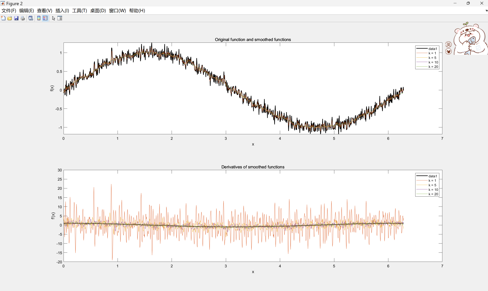
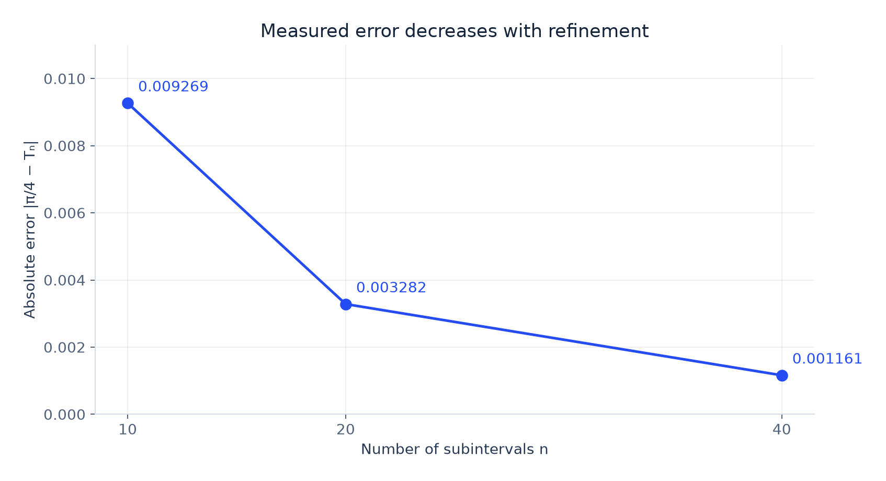
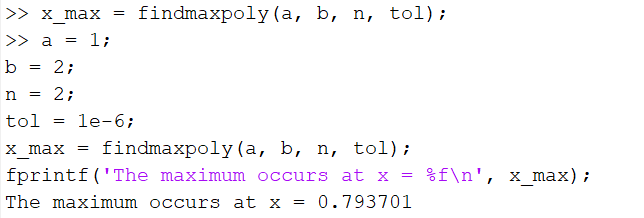
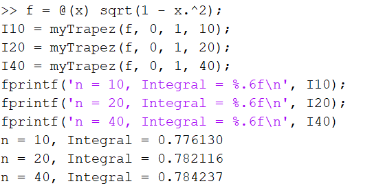

MATLAB · MA2252 · COURSEWORK
Numerical
analysis.
Turning mathematical methods into working code.
I developed MATLAB routines across nine coursework exercises, from solving linear systems to smoothing noisy signals and approximating integrals. The project connects algorithm implementation with numerical examples, visual inspection and error checks.
NUMERICAL ANALYSIS / THE PROJECT FILM
The project, in 109 seconds.
Original MATLAB outputs, smoothing and a measured convergence check.
Original coursework figures and output, with quadrature error recalculated from the stated function. The observed order is specific to this example. Motion graphics and synthetic English narration.
01 / IMPLEMENTATION
A toolkit of numerical methods.
The exercises cover several ways to translate a mathematical problem into a computation. Small examples make the steps and their outputs inspectable.
- 01
Linear systems
Compare the ranks of A and [A | b] to classify solution sets. Implement forward and backward substitution, then combine the routines to solve a system from supplied triangular factors.
- 02
Regression
Fit a rational response curve by applying a reciprocal transformation and linear regression. Transform the fitted coefficients back and plot the curve against synthetic data.
- 03
Interpolation
Implement linear filling of interior missing values using neighbouring observations. Explore cubic-spline construction through a system for the nodal second derivatives.
- 04
Newton iteration
Apply Newton’s method to the derivative of a polynomial to find a stationary point. Use the change between successive iterates as the stopping criterion.
- 05
Smoothing & differentiation
Apply a moving average to a noisy sine signal, then use central differences in the interior and one-sided differences at the endpoints to estimate its derivative.
- 06
Numerical integration
Implement the composite trapezoidal rule. Refine the partition from 10 to 20 to 40 subintervals and compare the result with the known value π/4.
02 / SIGNALS & NUMERICAL DERIVATIVES
Smooth the signal. Inspect the derivative.
The experiment uses 1,000 samples of sin(x) with additive Gaussian noise of scale 0.1 over [0, 2π]. Four window half-widths—k = 1, 5, 10 and 20—show how averaging changes both the signal and the derivative estimate.

Read k as a half-width
An interior moving average uses 2k + 1 samples: 3, 11, 21 or 41 for the settings shown. The window is shortened near the ends of the signal.
Check more than smoothness
The smallest window leaves large fluctuations in the derivative. A smoother curve is useful, but it still needs checking against the known derivative, particularly at the boundaries. The figure provides a qualitative comparison rather than a reported derivative-error score.
03 / QUADRATURE & ERROR
Refine the grid. Measure the difference.
Integrating the quarter-circle function gives a simple reference value for checking the implementation. All three approximations below reproduce the command-window results in the coursework.
I = ∫01 √(1 − x²) dx = π/4 ≈ 0.785398For n equally spaced subintervals, h = 1/n and Tn = h [f(0)/2 + Σj=1n−1 f(jh) + f(1)/2]. Absolute error = |π/4 − Tn|.
| Subintervals n | Approximation Tn | Absolute error |
|---|---|---|
| 10 | 0.776130 | 0.009269 |
| 20 | 0.782116 | 0.003282 |
| 40 | 0.784237 | 0.001161 |
RESULTS GALLERY / COMPUTATION & VERIFICATION
Code output meets an independent error check.
Original MATLAB outputs alongside an error plot recalculated from the stated problem.



04 / REFLECTION
An algorithm also needs checks.
What I practised
Breaking mathematical procedures into reusable MATLAB functions, using loops and array operations, interpreting diagnostic plots, and checking numerical outputs against known solutions.
The linear-system examples distinguish no solution, one solution and infinitely many solutions. The calculus exercises connect an implementation to a stationary-point calculation or an exact integral.
What I would strengthen
Add systematic tests for spline interpolation at the knots, missing values at the edges, singular triangular systems and Newton iterations that fail to converge. Benchmark the routines against trusted implementations and record reproducible random seeds for noisy-data experiments.
The supplied report is a coursework record with code screenshots and worked examples. Its scope is educational implementation, rather than a fully tested numerical library.
Source record and verification
MA2252 numerical analysis coursework, supplied as MA2252-2023-CA2-rx33.docx, Questions 1–9. The signal figure is the original embedded image from Question 8. Integration values were independently recalculated using the function and composite trapezoidal rule shown in Question 9.
The final prose in the source labels the smallest integration error as n = 30. The code, printed output and recalculation all identify that run as n = 40, which is the value used here.
NUMERICAL ANALYSIS / RUIZHE XU